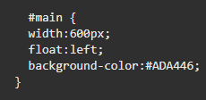
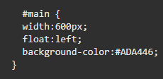

Practica No.3
Leccion 3 - Introducción a la presentación en pantalla con CSS
El papel del archivo de reset CSS
Todos los elementos HTML incluyen márgenes por defecto. Aunque los navegadores web actuales tienen una calidad
muy superior a los antiguos, conviene saber que cada motor de restitución empleado por los navegadores aplica
sus propias reglas para mostrar los elementos en pantalla.
Esto quiere decir que el margen por defecto de 10
pixeles en un navegador X puede transformarse en 15 pixeles en el navegador Y. Estas diferencias generan resultados
no homogéneos a la hora de ver las páginas en distintos sistemas.
Una técnica para homogeneizar las presentaciones en pantalla consiste en utilizar un archivo CSS de reset que elimine los estilos por defecto aplicados a los elementos HTML utilizados con más frecuencia. Con este reseteo de valores podemos conseguir una base fiable y coherente sobre la cual construir nuestros nuevos estilos.
Una regla CSS para anular los márgenes superior e inferior de los elementos heading 1 es así:
Ejemplo:
El uso de hojas de reset CSS puede tener algunas desventajas, sobre todo para los principiantes:
- tendrán que recordar constantemente que están utilizando dicha hoja de estilos y deben tener en cuenta cómo afectará a los distintos elementos del sitio web.
Si estamos aplicando la hoja de reset a todo el sitio, algunos de sus efectos pueden resultar sorprendentes, sobre todo con elementos con los que no estamos especialmente familiarizados. Por ejemplo, un archivo CSS de reset elimina los márgenes externos e internos de la mayoría de los elementos de los formularios, y cuando utilizan por primera vez con campos de formulario, muchos se preguntan por qué los botones, campos de texto y otros elementos aparecen de esa forma.
Introduccion a las opciones de presentacion de paginas
Antes de la estructura visual de nuestras páginas web tenemos que decidir unas cuantas cosas. Lo primero es qué anchura va a tener. Hay dos categorías principales de estructuras en base a su anchura: las de anchura fija y las de ancho variable.
Anchura fija
En las estructuras de ancho fijo todos los elementos de la página se anidan dentro de un contenedor que tiene un ancho explícito (en este ejemplo utilizamos el valor de 960 pixels, pero se suele utilizar también la unidad de medida em).
En ocasiones, puede ser útil no establecer de forma explícita la anchura de los elementos pero sí fijar una anchura máxima. En el siguiente ejemplo, el primer div no tiene establecida la propiedad max-width por lo que su anchura ocupa todo el espacio disponible en el elemento que lo contiene.
Sin embargo, el segundo div tiene establecida una anchura máxima mediante max-width: 400px. Si se reduce el tamaño de la ventana del navegador, los dos div reducen su tamaño para adaptarse al nuevo sitio disponible. Sin embargo, al aumentar el tamaño de la ventana del navegador, el primer div ocupa todo el sitio disponible y el segundo div no crece más allá de los 400px establecidos.
Ejemplo:
Anchura variable
La anchura fija es una solución muy cómoda para el diseñador ya que permite ubicar con precisión los distintos elementos (cabeceras, barras laterales y pies de página).
Las estructuras de ancho variable son más difíciles de diseñar y obligan al creador a resolver una serie de asuntos adicionales. Por ello, en esta lección vamos a empezar por crear una estructura de anchura fija.
Ejemplo:
El elemento div
Podemos considerar al elemento div como un contenedor genérico en el que podemos poner elementos relacionados entre sí de forma lógica. La apertura y cierre de etiquetas div suele hacerse rodeando a otros elementos de la página, de forma que dichos elementos quedan anidados dentro del contenedor. Puedes tener en la misma página todos los elementos div que consideres necesarios y con frecuencia se utilizan para crear el armazón visual.
Un elemento div suele llevar un atributo ID (con lo que adquiere un “nombre” explícito dentro de la página) o bien pertenecer a una clase CSS, utilizándose ambos como medio para aplicar al contenedor uno o más estilos CSS.
Ejemplo:
La propiedad float
Esta propiedad hace posible que un texto pueda escribirse alrededor de una imagen. Este estilo ha sido tomado del diseño de imprenta, donde a este efecto se le llama “justificación” del texto. CSS consigue el mismo efecto haciendo que los elementos que siguen a un elemento “flotante” puedan rodearlo, cambiando su posición relativa con respecto a él. Este comportamiento también nos sirve para crear columnas en una página.
El valor float se puede también declarar como “left”, “right” y “none”. No se puede centrar un objeto utilizando esta propiedad.
Si queremos tener múltiples elementos flotantes dentro del mismo contenedor, el resultado es que se alinean entre sí. Este comportamiento se suele utilizar en ciertas funciones habituales de las páginas web, como por ejemplo los menús horizontales o las galerías de imágenes.
Ejemplo 1: Ejemplo 2:
Creación de columnas con la propiedad float
Esto se puede realizar mediante el siguiente orden y uso de valores de css:
No.1: No.2:
 
El div “main” flota hacia la izquierda, pero el “footer” sube a la parte superior siguiendo el curso o “flujo” de restitución de la página.
Al hacer flotar este div hacia la izquierda hemos resuelto el problema de que parte de su contenido apareciera debajo de sidebar; a pesar de que por la cantidad de contenido que tiene el div main parte de él se sale del propio contenedor. También vemos que tenemos otro problema con el elemento footer: debería aparecer en la parte inferior de la página pero no es así.
Para obligar al div footer a ponerse en la parte inferior de la página le vamos a asignar una nueva propiedad llamada clear.
La propiedad clear
Cuando añadimos la propiedad clear a un objeto, le estamos indicando una regla que dice “no admito elementos flotantes a mi lado”. Podemos especificar si queremos que no haya elementos flotantes a la izquierda, a la derecha o en ambos lados.
Cuando es aplicado a bloques no flotantes, mueve el border edge (en-US) del elemento hacia abajo hasta que este debajo del margin edge (en-US) de todos los floats relevantes. Este movimiento (cuando acontece) causa que margin collapsing (en-US) no ocurra.
Cuando se aplica a elementos flotantes, mueve el margin edge (en-US) del elemento debajo del margin edge (en-US) de todos los floats relevantes. Esto afecta la posición de floats posteriores, ya que estos no pueden ser posicionados más arriba que los primeros.
Los floats que son relevantes para ser limpiados (cleared) son los primeros floats dentro del mismo contexto de formato de bloque.
Ejemplo: Su sintaxis:
Forma de utilizar la propiedad clear:
Cuando mencionamos anteriormente que podemos especificar si queremos que no haya elementos flotantes a la izquierda, a la derecha o en ambos lado y que en el caso del pie de página, queremos eliminarlos de ambos lados, con esto podemos realizarlo de una forma como se ve en el ejemplo siguiente:
No.1: No.2:
Añadir estilos para textos
Cuando estamos diseñando la estructura de las páginas, el empleo de hojas de estilo internas es una cuestión de comodidad: resulta más sencillo para crear y modificar reglas si las tenemos dentro de la página y podemos llegar a ellas desplazando la ventana que si las tenemos en un archivo externo. De momento vamos a asociar una hoja de estilos externa que añade reglas de base para elementos como títulos, listas y párrafos. Esto lo podemos agregar tomando como base el siguiente ejemplo:
Ejemplo:
Margen interno
El margen interno (padding) consiste en añadir margen al elemento div contenedor. En este caso la ventaja es que todos los elementos dentro de este div se ven afectados al mismo tiempo, es una solución rápida y eficiente. Su desventaja es que aumenta la anchura total del propio contenedor. Para compensar esta expansión, tenemos que dejar algo de espacio adicional a los lados.
Ejemplo:

Margen externo
Los márgenes externos consisten en añadir margen a los elementos que están dentro del propio div. Su desventaja es que necesitamos más código y hay que prestar atención a los detalles, tenemos que ir viendo cómo se posicionan los elementos individualmente. Su ventaja es que el posicionamiento de la columna es más predecible, puesto que solo tenemos que tener en cuenta una anchura total.
Ejemplo:
Ajuste fino a la estructura visual de la pagina
Podemos aplicar colores de fondo y/o bordes a los elementos principales de nuestra estructura en las primeras fases del diseño, lo que nos ayudará a ver mejor sus límites. Después, si no queremos conservarlos, podemos eliminarlos y la estructura seguirá funcionando sin problemas.
Como ejemplo del ajuste fino a la estructura visual de la pagina podemos utilizar una pagina de ejemplo para eliminar los colores de fondo de los divs del centro de la página, añadir algunas imágenes de fondo y mejorar el estilo de la barra de navegación.
Antes de aplicar los cambios:
Despues de aplicar los cambios:
Preguntas relacionadas con el tema
¿Que es un CSS?
CSS principalmente es un lenguaje de diseño gráfico que se escribe dentro del código HTML del sitio web y, permite crear páginas de una manera más exacta y aplicarles estilos (colores, márgenes, formas, tipos de letras, etc.) por lo que se tiene mayor control de los resultados finales.
Algunos conceptos importantes para entender que es CSS se pueden dividir en distintos puntos como:
- CSS son las siglas de Cascading Style Sheets.
- CSS describe cómo se mostrarán los elementos HTML en la pantalla, el papel o en otros medios.
- CSS ahorra mucho trabajo. Puede controlar el diseño de varias páginas web a la vez
- Las hojas de estilo externas se almacenan en archivos CSS
¿Para que sirve un CSS?
CSS principalmente se utiliza para definir estilos para sus páginas web, incluido el diseño y las variaciones en la visualización para diferentes dispositivos y tamaños de pantalla.
Pero en si, se usa para estilizar elementos escritos en un lenguaje de marcado como HTML. CSS separa el contenido de la representación visual del sitio.
La propia relación entre HTML y CSS es muy fuerte.
El código CSS hace la vida más fácil al desarrollador front-end al separar las estructura de un documento HTML de su presentación. Dicho de otro modo el HTML actuaría como es esqueleto de la web, definiendo su estructura básica, y el CSS añadiría toda la capa de personalización sobre el que la web define su aspecto final.
¿Cual es la diferencia que seria mas difícil de realizar en un sitio web si se optara por no usar un CSS?
Para empezar la gran diferencia de hacer un sitio web, completamente con html no es tan mala tomando en cuenta las cosas que puedes hacer con puro html, porque html en si es la propia estructura de la pagina, pero la gran cantidad de opciones, caracteres, valores, comandos, variables, ordenes y diseño que le puedes meter a una pagina con puro CSS es escencial.
Principalmente por decir las caracteristicas mass importantes de CSS son que puedes editar cualquier caracter, comando o orden de la pagina html lo cual si no tuviera CSS no podriamos editar el body, main, colores, texto, imagenes, titulos, fuentes, orden, animaciones, menus, parrafos, etc.
Como podemos ver CSS tiene una gran importancia y impacto del diseño y experiencia de usuario de la pagina web y sin CSS no las paginas web no serian tan modernas a como son hoy en dia.
Conclusiones individuales
Emmanuel Enrique Larraga Bueno
En conclusion, esta actividad me ayudo a apreciar mas el papel que tiene css para los archivos html, ya que de por si css tiene demasiadas funcionalidades que hacen que podamos editar la pagina de multiples formas que en html no serian posibles, esto gracias a la gran cantidad de comandos, variables, valores y ordenes que puedes dar con css con simplemente seleccionar que parte del archivo html quieres editar.
Alan Guillermo Ramos Zavala
Después de la práctica logro entender que es mejor utilizar CSS que HTML ya que lo que se utiliza en CSS es más fácil y cómodo de usar, las distintas técnicas que puedes aplicar ayuda a que se obtenga un mejor resultado, pero si entendemos estas dos y las combinamos podremos crear mejores cosas, ya que ambas se pueden ayudar a realizar el objetivo deseado. Existían ciertos conceptos de los cuales no tenía idea, como era el caso del archivo reset, es algo interesante, pero considero que no lo utilizaría mucho. Un punto importante es la información de los márgenes y las opciones de presentación de página ya que no es lo mismo de cómo lo vemos en una computadora como en un celular. Otro aspecto que me sorprendió fue el cambio que se le dio a las tablas y como antes de CSS las creaban, ya que tenían que crear una adentro de otra.
Adrian Fuentes Mendoza
Tras la finalización de esta práctica pude notar un fuerte impacto en esta, pues trataba sobre el CSS y como se implementa en el HTML para crear una representación gráfica mucho más agradable para la página en cuestión, a pesar de ya haber utilizado el CSS en el proyecto, tras está práctica se pudo ver más sobre su origen y el gran cambio que tuvo, principal mente con el formato de adaptabilidad, debido a que actualmente se pueden ver páginas web desde diferentes dispositivos y pantallas, lo que haría que la mayoría se viera mal si no era hecha de forma responsiva. Además de abarcar otros conceptos y temas del CSS en la práctica, lo que más me sorprendió fue algo muy básico Que sin CSS nuestra página con únicamente HTML se ve vacía y y se pierde el interés en esta fácilmente, a pesar de que actualmente todas las páginas cuentan con CSS anteriormente era difícil el formato sin el, siendo haci algo básico hoy en día, en su tiempo fue un tremendo cambio.
Isaias Jair Solano Peral
Tras el desarrollo de la practica 3 , el cual fue para mi un primer acercamiento a las bases y fundamentos básicos de CSS puedo concluir que gracias a su implementacion en el HTML podemos tener mas posibilidades de representación gráfica, con mayores opciones de personalización lo cual nos permite mejorar el aspecto visual de una pagina web. Esto impacta de forma positiva en la experiencia de navegación de la pagina web. Aunque la información era nueva para mi y no entendía algunas partes me pareció interesante la forma en que se implementa en la pagina, sus opciones, la posibilidad de crear menús, estilos de texto, margenes internos y externos la propiedad float columnas,etc . Sin duda alguna es una tecnología necesaria en la industria, concluyo que CSS complementa de buena manera las deficiencias que tiene HTML en el campo del diseño, tiene cierta complejidad pero satisface muchas necesidades en el diseño de paginas web.
Enrique Escobedo Adame
Los beneficios de usar CSS son varios, por un lado evitamos hacer archivos demasiados pesados (adiós a la espera en la carga de nuestro sitio web en el navegador, que tan tediosa resulta para el usuario final), ahora definimos el estilo de un sitio entero sin necesidad de hacerlo para cada una de las etiquetas de la web, lo que nos lleva a otra de las ventajas, la reutilización del código y la mejora en la legibilidad, orden y estructuración de los archivos que forman un proyecto de desarrollo web.